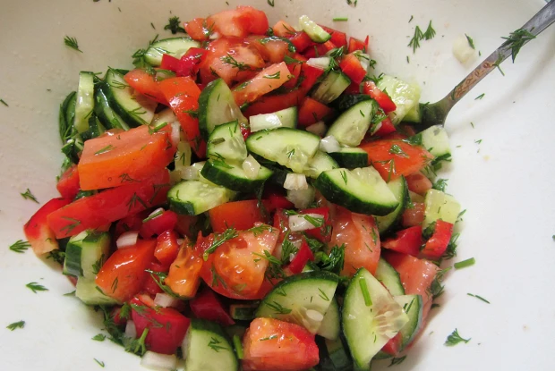

Vegetable salad

Описание
Простой ароматный салат поднимет настроение
Ингредиенты
- Помидоры- 1шт
- Сладкий перец-1 шт
- Огурцы-1 шт
- Репчатый лук-1 головка
- Растительное масло-15 мл
Шаги по приготовлению
- Нарезать овощи произвольно.
- Заправить растительным или оливковым маслом.
- Добавить соль и перец по вкусу.